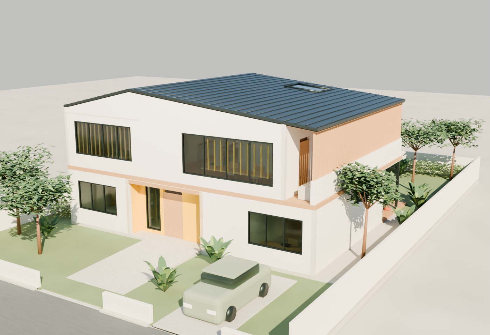
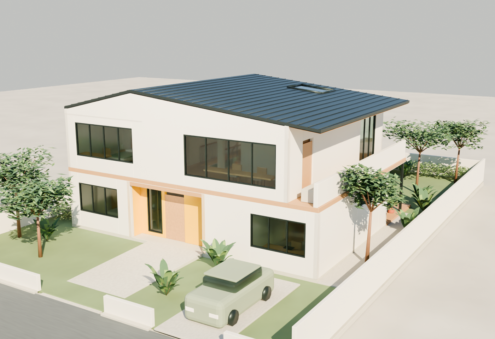
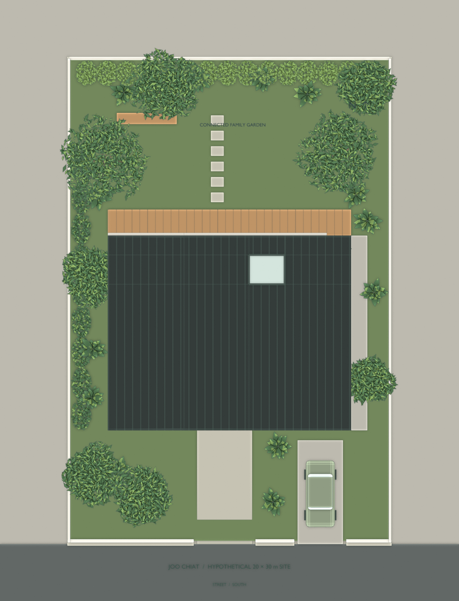

01 / Street perspective — V2
320 m²Concept enclosed GFA
180 m²Covered projection
≥319.56 m²Planted garden
3 bedroomsTwo storeys / One car
An asymmetric roof fold, a warm yellow arrival recess and a sequence opening toward the garden translate the inspiration into family life. Pale timber and linen keep the private rooms calm; filtered screens and a rooflight give shared spaces their own character.
Two floors. One family.
A quieter edge, the same idea.

V1 / Open terraceV2 / Filtered privacy
V2 adds timber fins to the east terrace and child-room frontage, plus a fine yellow screen at the shared gallery. Roof, arrival, room layout, areas and direct garden access stay consistent.
Site plan — hypothetical 20 × 30 m plot

Eye-level arrival and upper lounge
Concept geometry only. Areas and roof bounds were checked against Blender meshes; planted area is a conservative site remainder. Accessibility, structure, environmental performance, weatherproofing and statutory compliance remain unverified. Measurement record ↗